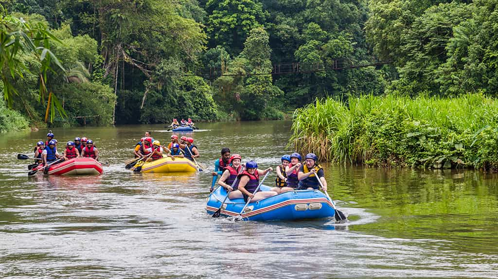
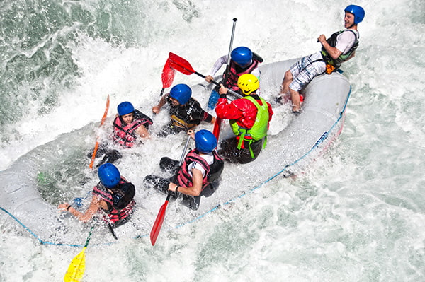
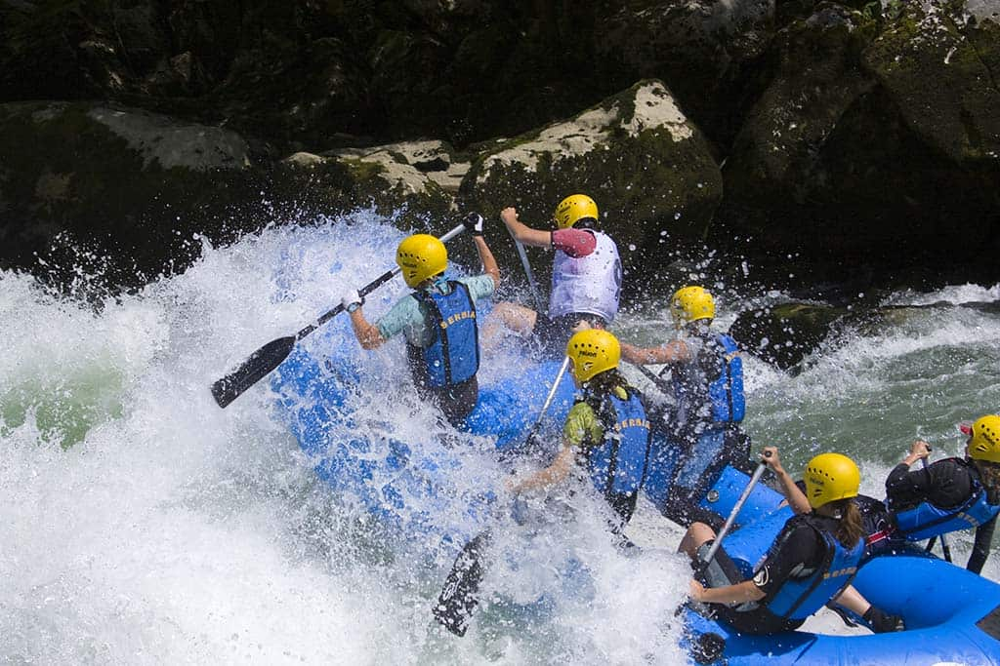

Nossas Aventuras nas Corredeiras
Ficou com alguma dúvida ou quer montar um pacote personalizado para grupos?
Reserve Seu Passeio Conosco!Modalidades Disponíveis

Perfeito para crianças e iniciantes. Realizado em águas calmas de Nível I e II, focando na contemplação e na diversão segura.

Para quem busca emoção moderada (Nível III e IV). Quedas acentuadas e ação coordenada em equipe comandada por nosso guia.

Destinado a veteranos (Nível V). Corredeiras rápidas, passagens estreitas e adrenalina máxima na icônica Queda do Itararé.
Tabela Comparativa de Percursos
| Passeio | Duração | Dificuldade | Incluso |
|---|---|---|---|
| Introdução Light | 1h 30min | Nível I - II (Fácil) | Bote, Colete, Capacete, Guia e Lanche |
| Expedição Adrenalina | 2h 45min | Nível III - IV (Médio) | Bote Pro, Equipamento, Fotos Digitais e Guia |
| Desafio Extremo | 4h 00min | Nível V (Avançado) | Equipamento Premium, Seguro Atleta, Guia e Almoço |